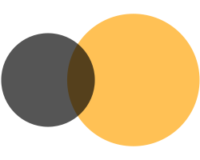
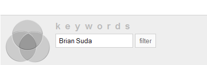
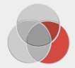
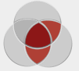

A previous article about the problems with pie charts received plenty of attention. This time I’m taking on Venn diagrams. As a numeric graph, these share many of the same failings as pie charts. They require the observer to estimate relative areas on abstract shapes.
In this example, you can see two overlapping circles. Firstly, did you know one circle is double the area of the other? Probably not, because we’re not very good at judging relative areas of shapes. Can you determine the value of the overlap area? The equation is complex on paper, let alone in your head!
You need to take the cord that cuts the circle, find the height h, the length of the cord L and the radius of the circle R.
That gives you area of the cord which you’d need to repeat for the other circle, then add the two values together. See not so easy now is it!
To “improve” this as a graph, we’d need to add the values for each area. In doing so, we’re back to the same issue with the pie chart, if you need labels, why isn’t this just a table? What additional information do you learn from the circles?
As a graph to convey some percentage of overlap Venn diagrams are just eye-candy, but they do have a strong reason to exist.
Venn Diagram’s for Abstract Concepts
Venn diagrams excel when they explain logical concepts such as philosophical ideas or arguments.
If we take the assertions: all mammals are part of the animal kingdom and humans are mammals, we can determine that humans are animals. If we represent this as a Venn diagram there is one large circle representing all animals. Inside of this, there’d be another circle representing all mammals, and finally within that, a final smaller circle representing humans. The circles are getting smaller because each contains multiple assertions. Humans are mammals, but so are dogs and cats. Humans are just a subset and therefore don’t take-up the whole area of the circle. If we remove the circle representing mammals and we’d be left with the assertion humans are animals.
From this, we can begin to build-up logical statements, also known as propositional calculus. Take for instance the following assertions: “it is raining”, “the ground is wet”. In propositional calculus we need to be aware of several logical statements and their fallacies. Take for instance Modus Tollens:
If we substitute our earlier assertions, “it is raining” and “the ground is wet” into this equation we get:
Then logical fallacy comes in when you invert the assertions.
While the first part might be true, the second part does not logically follow from it. There could be other reasons why the ground is wet even though it is not raining. People could be outside watering plants or washing their car. We can build these assertions as a Venn diagram to help explain why the inverse is not true.
The state of the world is either the ground being wet or not. So the largest circle is for the ground being in the wet state. A small circle inside of this represents “it is raining”. This is wholly within the circle “the ground is wet” because every time it rains the ground must be wet. We know this from our original assertion. But as you can see from the diagram, there are other reasons why the ground can be wet. For instance, “watering plants” can make the ground wet or may not. Therefore, that circle is partly inside and partly outside the circle “the ground is wet”.
Now if we go back to our assertions, if it’s raining the ground is wet. If we examine every point inside the circle “it is raining” we’ll find that it is contained by the circle “the ground is wet”. When we negate the statement, the ground is not wet, it is not raining. “Ground not wet” is represented by all the space outside the largest circle and nowhere in that space is any part of the circle “it is raining”.
The inverse does not hold-up. If the ground is wet, it is raining. If we look at the circle “The ground is wet” some of the area inside of this contains the circle “it is raining”. So this statement is not immediately false, but there are other reasons why the ground could be wet. The last part we need to address is the inverted negation “it’s not rain” therefore “the ground is not wet”. “It is not raining” is described by the area outside the circle “it is raining” and as we can plainly see, some of that area contains the circle “the ground is wet”.
Venn diagrams modeling logical statements allow us to visualize larger constructs in ways that are easier than written sentences without having to deal with exact numeric values.
First Order Logic
First order logic, truth tables and logical operators sound complicated, but they’re really not. We make statements in these forms all the time without even realizing it. When preparing dinner, you look through the fridge and see what’s available. Maybe you have some rice, then you need to ask your self, “I can cook some chicken or beef to go along with this.” Next you might think, “if I have chicken, I need to cook some vegetables.” This is built-up to statements such as:
The basics behind first order logic revolve around truth tables of AND, OR and NOT. This is a table that shows you the results if you were to look at all the possibilities and their resulting operations.
If there are two options “Chicken” or “Beef” the truth tables based on AND and OR are as follows:
| Chicken | Beef | AND | OR |
|---|---|---|---|
| No | No | No | No |
| No | Yes | No | Yes |
| Yes | No | No | Yes |
| Yes | Yes | Yes | Yes |
Having this truth table, we can ask questions such as “Are you having beef OR chicken for dinner?” You can quickly look at the first two columns and begin to fill-in the blanks. The first row represents Chicken=No, Beef=No, so the answer to the question would be the corresponding OR column, “No, we are not having beef or chicken for dinner”. Now, if we look at the next row, chicken=No, beef=Yes, you can answer the question, “Yes, we are having beef or chicken for dinner.” Presumably, you don’t get the answer you wanted, which is “what is on the menu”, but using these truth tables you can build-up chains of these statements to determine answers to other questions. Plenty of board games such as Clue/Cluedo benefit from this sort of logic, “Do you have Professor Plum OR the Observatory OR the Revolver”, then then a card gets shown. So you know at least one of those was a yes! Over time, with enough truth tables, you can win the game, but be careful, if you get too good, all your friends will call you a dork and never play board games with you again—there is an art to bluffing and knowing when to be a gracious loser.
Performing a Web Search with Logical Operators
With this knowledge of logical operators it is possible to plug them into search engines to get more refined results, but it is highly unlikely that you have done this and if you have, I bet you don’t do it very often. The reason being, it’s too difficult to write out these long strings, the syntax for ANDs and ORs plus all the nested parentheses for groupings feels like a programming language when all you wanted to do is search.
Let’s take the three terms: Peanut Butter, Jelly, Bananas and examine a few different combinations which would allow us to search for vastly different documents.
Sites like Google use something similar to the truth table when determining if it should return a document. It asks each document, do you have the term “Peanut Butter” and saved the answer Yes or No. It then repeats this for the other two terms for all the documents. It then looks in the corresponding OR column. If the result is a Yes, then the page is returned as a search result matching the query. Now, computers are very good at this sort of logic, so the truth table is over simplifying what actually happens.
Let’s look at some other possible queries and think about what the truth table might look like and if the returned documents make sense.
This query will find all documents which contain all three terms, because for the AND operator to return Yes, all the individual items must also be Yes.
This query will find all documents with the term “Peanut butter” as well as one of the other two remaining terms. So you’ll be reading articles about Peanut Butter and Jelly sandwiches next to article about Peanut Butter and Banana sandwiches. The key is that Peanut Butter will be present in every article returned.
This query will find documents all documents that contain the terms Peanut Butter and Jelly, or documents that contain the term Bananas.
This doesn’t express all the permutations or even touch on the concept of NOTs. Such as, show me all articles about Peanut Butter and Banana sandwiches not involving Elvis.
Sites like Google have created advanced search forms which make it easier to build-up boolean logic queries, but they aren’t intuitive.
This form has the ability to conduct AND and OR searches, echoing back the query string to help teach people how they can do create their own searches without having to visit this page.
Google will argue that their search algorithm is good enough to get round edge-cases which require monolithicly complex queries. In Google’s case, they are probably right, the general public will never need to make use of such specific searches, but that doesn’t mean other more niche systems won’t need a solution.
Venn Diagrams as GUI Controls
One thing I have been experimenting with, and I’ll be the first to admit it might be a failure, is to map complex AND and OR queries to sections of a clickable Venn diagram. This is no longer a data graph, and it is bordering on no longer being a visualization, but instead a GUI component with the same first class status as the checkbox or radio button.
A Venn GUI control needs to be intuitive, easy to interact with, and immediately usable. At the moment this prototype isn’t there yet, but with further development, testing and tweaking, I think it shows promise in a niche sub-set of search applications.
Requirements
There are several technical goals of this new GUI component which need to be addressed.
- The control needs to look like a control, look clickable and react in some form like a checkbox remembering state
- The clickable zones need to be large enough to be distinct from each other and so that they can acquired with ease as defined by Fitts’s law
- Accessible in a manner that there is some logical tab ordering or ability to activate zones without a pointing device
- Associate each zone with the concept or concepts it represents
- Usable on a monochrome display
Beyond the technical requirements, there needs to be an association with what the Venn diagram is trying to convey. Will people understand the concept of a union of multiple terms?
Issues
- The current design can easily handle 2 and 3 term Venn diagrams, but it does not easily scale to N>3
- At the moment this requires some scripting language to handle the click-behavior. This could be moved into a proprietary format such as Flash. If this were ever to become a standard GUI control, any behavior would natively be handled by the application, but until then, there are some external dependencies.
So this is the first draft of the Venn diagram GUI control. It was written in SVG with some minor javascript to control the interactions. You can view the source and see how it all works, a modern browser is needed.
{kind=link}

As you can see, it is modeled after the RGB color spectrum. The feedback from this test focused around not really understanding the colors or what was happening—back to the drawing board.
This first implementation didn’t look like a GUI control, it looked like a corporate logo. It didn’t “smell” like a widget so people were unaware of how to treat it.
I proceeded to add some 3Dness to the shapes by beveling the edges and adding a slight gradient to mimic an external light source. This is an example of how the control might look in situ.
The next step was to make the selected state more obvious without the RBG colors. The main color can be swapped out based on your theme, but for this I am using red.
If we have 3 search terms, Peanut Butter, Jelly and Bananas, the following Venn diagram would equate to the search:
Show me all articles that contain the word ("Banana" OR ("Banana" AND "Peanut Butter")) AND NOT "Jelly".
The circle as a whole represents all articles that contain the word “Banana”, but we have only selected the outermost part. Which are documents that just contain the word “Banana” and not the other two terms. We have also selected the small overlapping section between “Banana” and “Peanut Butter” so it will also return those corresponding documents.
 In this example, the Venn Diagram represents a slightly more complex search query, yet it’s just as easy to click on and understand. We have selected the small wedge between “Peanut Butter” and “Bananas” as well as the small wedge between “Jelly” and” Bananas”. The third section is the intersection of all three terms. So the search query written out would look like this:
Show me all documents that contain: ("Bananas" AND "Peanut Butter") OR ("Bananas" AND "Jelly") OR ("Peanut Butter" AND "Jelly" AND "Bananas")
Clicking the different regions to adjust your advanced search seems to be much faster and easier than writing the long and egregious query strings, but the advantage is only gained when people understand the control without an explanation. This is what remains to be tested.
I am planning on using this control in some internal projects as an advanced search option. This is a controlled environment to test the awareness and usage so adjustments can be made or it can be scrapped entirely.
As with any new idea, the creator has more vested in seeing it succeed than others. I would love nothing more than for this idea to take-off, but I’m sure there are plenty of reasons why it won’t. I’m open to any suggestions on ways to improve the interface and idea, as well as all the reasons why this might be the worst GUI component ever thought-up. I think it has great potential, but then again, I’m biased.
Brian, very interesting point.
The thing is.. if what you’re looking for can be expressed by simple logic sentences, venn might be overdoing it.
But as soon as you run into sentences like A and B or C, people might get confused. Venn diagrams should be helpful, but I’m just not sure whether they’ll be easy to understand for people who did not study statistics at school.
I think whichever UI you end up formulating, it needs to be heavily tested with non-scientific crowds. And yet, remember that these kinds of queries are seldom used. Advanced searches are far less used than basic searches. That means that not everybody needs this kind of power. But when they do, I agree that this might help understanding far more complex queries.
I like the approach of progressively adding “filters” but I think something could be devised, à lá iTunes smart playlists. But instead of one line for each “group” in the diagram, it would be presented as a graph/mesh, allowing users to specify which operator they wanted between every group (and/or).
Not sure if I made myself clear. Did I?
I love the idea!
My Feedback:
-The circle on top looks to be in the foreground, so my first thought is that it’s selected. It would be best if you can make all three equal.
-You’re using red to show the terms you’re using. With ‘NOT’ a popular boolean, one might think ‘NOT’ terms would show up in red, so it may be counter-intuitive. Maybe green, or some other colour? Since, by default, leaving one circle completely unhighlighted means ‘NOT’, you can make it red by default.
-For the average person, it would be hard to wrap their head around what it means to highlight a different piece. If they could work with just the three main keywords and have the pieces between them worked out automatically, things might be easier. (In other words, if they can successfully manipulate the results using only the three outermost pieces.)
It’s a great concept although I’m with Andre on how intuitive it would be for everyday people to use. I think in some contexts it could work brilliantly, such as for comparing datasets like two or three genomes to find common/unique sequences. The audience in that regard would definitely have some scientific leanings, but if we’re talking about something more ubiquitous then I wouldn’t imagine it would perform as well as something less imaginative and unusual (unfortunately).
André, Michael, Robert, I agree with you that using Venn diagrams could seem confusing to everyday people. My two retorts to that would be: we shouldn’t assume people are stupid, we should educate them. There is nothing worse than talking down to someone and depriving them of an opportunity that they could learn to understand. To start, this GUI element could be part of the advanced search option. People using the advanced search would be more willing to explore and learn how to use this new GUI component since they have already expressed interest in using power user type tools. Secondly, many of the GUI components and Icons we use today had to start somewhere. Things we take for granted, such as the humble Arrow, were not always part of our vernacular. Before the Arrow, the Manicule was the preferred way to point something out. There was a moment when someone suggested using an Arrow and everyone said, “Yeah, I get it, but it’s not be intuitive to everyday people.” I’m not suggesting that the Venn diagram is as influential as the Arrow, but every idea has to start somewhere.
I’d love to find the discussion when someone first suggested the check box, radio button and drop down list to be added into HTML or the Operating System.
Hopefully, the Venn diagram as a GUI control has sparked some discussion and ideas to potentially improve and iterate it into a more usable form.
Very good retorts! I was woefully unaware of how we arrived at the GUI elements we take for granted today. I guess the only way to really get a grasp of how people respond to using it would be to make a simple version of it for searching some real data. How do you feel about others experimenting with your example code page? Do you think a twitter or flickr search tool would be a good demo?
Robert, or anyone, please take the code and idea. I would love to see a mock-up of a Flickr image search using this. Their API is pretty flexible, that might be an excellent challenge. If anyone is interested, let me know, I’d be happy to help.